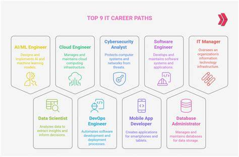

Our Programmes
The Department of Technology and Analytics offers certificate, diploma, and degree programmes designed to match the needs of today's digital industries. Courses include Software Development, Data Analytics, Networking and Cybersecurity, and Information Systems, each built to balance theory with practical skills.

Learning Experience
Students learn through lectures, laboratory sessions, group projects, and industry attachments. Every course includes hands-on assignments so learners can apply what they study to real problems, from building web applications to analysing large datasets.
Career Pathways
Graduates are prepared for roles such as software developer, data analyst, systems administrator, and IT consultant. Our courses also lay a strong foundation for further studies, giving students the option to advance into postgraduate programmes or start their own technology ventures.
